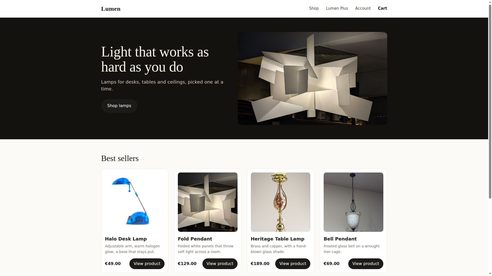
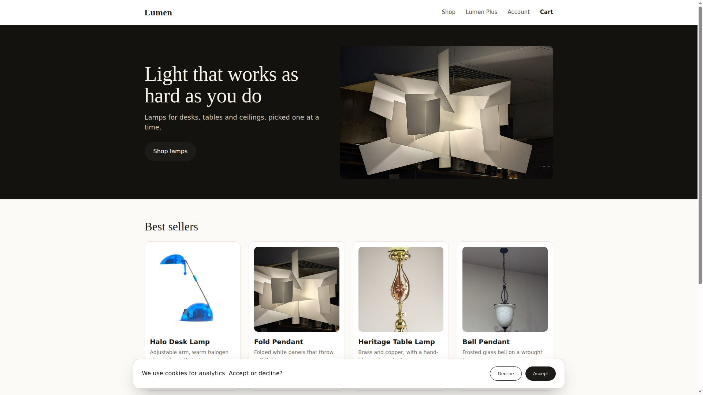

A developer pasted Google's tag. Nobody touched the code after that.
The site worked, and it broke the law: Google Analytics ran before any visitor was asked. Statute caught it on the pull request, Claude Code fixed it, Kane CLI proved the fix in a real browser, and Statute pushed it. Seven and a half minutes, 46 credits.
Recorded from a real pull request, miracle352/lumen#2. Every screenshot comes from Kane's sealed evidence packs; every verdict was made by code, not a model.
Paste this into the <head> of every page.
That is what Google's setup page tells you to do, so that is what the developer did. The shop still works. Every functional test would pass.
Statute read the diff before starting Kane: a tracker domain in server.js, so it ran the consent check and nothing else.
The whole change, as committed. Commit 91cddaf
Kane looks for a way to refuse. There isn't one.
Kane was told to refuse cookies if a banner appears, then browse and reload. It found no banner, and it recorded every request the page made.

From Kane's evidence pack: 16 requests, 2 of them measurement hits to Google Analytics carrying a visitor ID.
Reject means reject, and here there was nothing to reject.
Statute's code, not a model, read the network recording: tracker requests before the visitor made any choice, and no way to refuse them.
ePrivacy Directive Art. 5(3): storing or reading non-essential data needs prior consent. GDPR Art. 7: consent must be as easy to refuse as to give.
The same evidence always gives the same verdict. You can re-judge it yourself: npx github:miracle352/statute demo lumen-pr-2
The agent fixes it, and says it hasn't checked.
"The Google tag was hardcoded in every page's head and loaded straight away, so it ran before any choice and the site had no way to decline. I removed that static tag and added an Accept/Decline banner. The tag now loads only when the stored choice is accepted. I haven't run the app or re-run Kane against it."
That last sentence is why the loop exists. A fix only counts when Kane says so.
Claude Code's change, abridged. Full diff in commit 0d32771
Kane clicks Decline. Then, separately, Accept.
After Decline: 11 requests, none to a tracker, no visitor ID. After Accept: Google Analytics loads as intended. Checking Accept too means deleting analytics can't pass as a fix.


Statute pushes the proven fix to the pull request.
Only because Kane passed. Had it failed, Claude would have had another round with Kane's new report, and nothing would have been pushed until a pass.
Then the PR was merged. The same check now runs on every pull request that touches tracking, prices or subscriptions, and on the live site every night.
The comment on the pull request, with Kane's screenshots under it. Open the pull request
Don't take our word for it.
Every link here goes to the original. The evidence packs are in the repository, and the verdicts are recomputed from them by a test on every commit.
- The pull request: the pasted tag, Statute's comment with Kane's screenshots, and the fix commit by statute[bot]miracle352/lumen#2
- Kane's three runs on TestMu: the violation, the Decline check and the Accept checkViolation · Decline · Accept
- The full case file, rebuilt from the sealed packsCase file
- Re-judge all three runs on your machine, no account, no credits
npx github:miracle352/statute demo lumen-pr-2 - Put the same loop on your repository
npx github:miracle352/statute init --fix - The counter-case: asked to "add Google Analytics", Claude Code added a consent banner itself. Kane verified its claim was truemiracle352/lumen#1